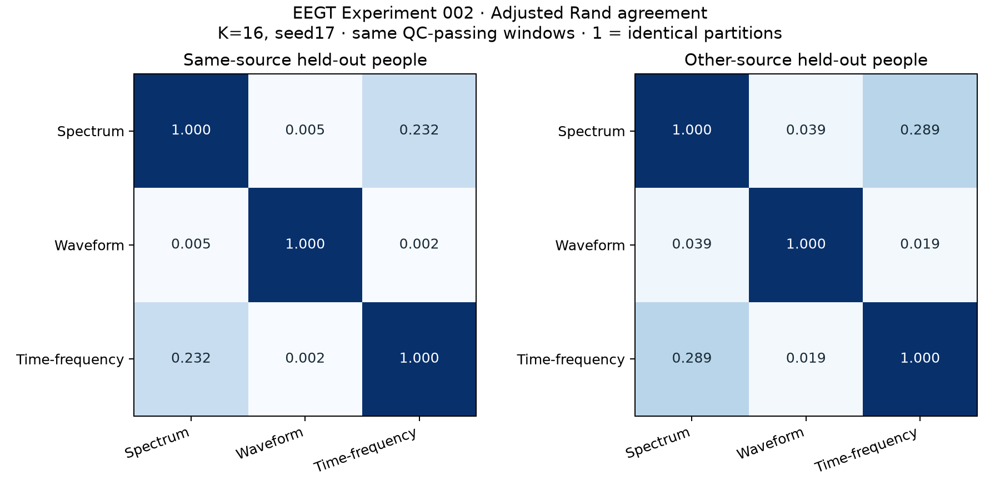

Observe
Begin with open EEG recordings and preserve the original samples. Numeric quality checks describe what can be analyzed.
Open research notebook 001—012
Project subtitle
An LLM’s interpretation of your brainwaves
EEGT studies whether a small vocabulary of numeric tokens can retain useful structure in EEG recordings. The current study compares waveform landmarks with numerical EEG embeddings; it runs no LLM decoder and does not interpret thoughts. The notebook shows the inputs, tests, and limits behind each result.
Token IDs describe measured signal patterns. They are not words, thoughts, diagnoses, or interpretations of a person.
Current protocolWaveform landmarks · 012
InputOpen around-ear EEG
Release ruleNumbers after verification
01 / PURPOSE
EEGT compares numerical signal codes and continuous representations, then measures their stability and limits across recordings. Prior exposure and training overlap are recorded separately for each experiment.
Begin with open EEG recordings and preserve the original samples. Numeric quality checks describe what can be analyzed.
Learn unsupervised codebooks from waveform, spectrum, and time-frequency views. Each token is an index in a learned vocabulary.
Compare multiple seeds and vocabulary sizes, including on held-out recordings. Report numerical agreement and failure cases.
02 / INPUT CONTRACT
The discovery input is signal values and the numeric information needed to place them in time and channels. Task, identity, and clinical labels do not teach the codebook; metadata is kept separately for scientific audit.
Read the reproducible protocolNo words, task labels, identity labels, or diagnoses in discovery.
03 / ACQUISITION SCOPE
The Neurable Research Kit publicly advertises 12 EEG channels at 500 Hz. The open cEEGrid recordings below share an around-ear measurement geometry, but they were not captured with that headset. An import adapter cannot establish physical headset performance.
| Source | Measurement | Here |
|---|---|---|
| Neurable Research Kit | Advertised: 12 EEG channels, 500 Hz | Target for a numeric import contract; no kit capture tested here. |
| OpenNeuro ds004015 | Selected cEEGrid around-ear recordings, 500 Hz | Open source recordings for Experiment 002. |
| OpenNeuro ds005207 | Selected cEEGrid around-ear recordings, 250 Hz | Open source recordings for Experiment 002. |
Rates describe the selected source recordings. Source datasets can contain other acquisition types or rates; the run manifest must identify each selected file.
04 / RESEARCH NOTES
Each entry separates fixed inputs from measured outcomes and states what a result can support.
We measured extrema, inflections, cycles and bursts on the same 122 selected segments, retaining every candidate and rejection across 2,806 event partitions.
Event-to-encoder alignment differs between CodeBrain and CBraMod. Adjusted p values are 0.50, 0.25, 1.00 and 1.00. Recurrent numerical turns do not yet establish universal tokens or transitions between brain states.
CodeBrain and CBraMod receive the same 122 selected wave segments and controls. Within-block original-minus-phase contrasts are positive in all five paired people.
Geometry and change contrasts have adjusted p = 0.125. Five-person test resolution, learned priors, shared recording effects and unknown training overlap keep the universal-geometry question open.
A frozen quality census checks 5,760 blocks across already examined recordings. It selects 122 time-distributed inputs; five people supply sufficient paired-night support, and the pretrained encoder completes 610 passes.
Geometry correlations are small, even where they exceed the specified shift controls. Change-profile tests do not clear correction. Every rejected and qualified-but-unselected block remains traceable.
A fixed public EEG encoder runs on nine of 240 candidate segments, with four waveform controls each. The strict quality rules leave no complete eligible participant pairs, so the planned agreement tests cannot be estimated.
All exclusions and segment observations remain visible. The result establishes a reproducible model execution path, without establishing universal tokens or brain meaning.
Twelve new ear-EEG recordings add 86.38 qualified hours. Six participants each contribute two nights; the frozen comparison analyzes 48 hours and asks whether session summaries recur across nights.
All four documented ear channels are used. No stage or personal labels enter numerical discovery. Stable person or sensor effects can contribute to recurrence; this does not establish universal tokens.
The full open around-ear inventory contains 55 recordings. Fifty-four qualify, totaling 223.47 sample-hours. We compare the timing and geometry of changes in waveform shape, spectrum and sensor coordination, with phase and nuisance controls.
The methods receive numerical waves without identity or task labels. These measurements test repeatable signal structure; they do not establish a universal brain language. Experiment 005 is a prepared Neurable protocol, with no physical collection yet.
Eight around-ear recordings were checked numerically and tokenized with three unsupervised feature families. All 27 seed and vocabulary settings were retained and reproduced.
VERIFIED OUTCOME
In progress — results will appear after verification.

A scalp-trained, single-channel spectral codebook was an early baseline. Its external coverage was low; this does not demonstrate universal patterns or brain meaning.
393 / 3,458 windows covered. Another 3,011 were out of distribution and 54 were clipped. The denominator counts windows, not people or meaning.
05 / REPRODUCIBLE METHODS & LIMITS
The source files remain intact. Derived numeric views, quality decisions, seeds, and run settings belong in the release record with the outcomes they produce.
Experiment 002 uses eight selected recordings and the interval from 60 to 660 seconds in each. Preserve original samples; document any re-reference, filter, resampling, and window rule as fixed parameters before reporting results.
Run numeric QC, then learn waveform, spectrum, and time-frequency codebooks with multiple seeds and K = 8, 16, and 32. Discovery sees no hidden task or identity labels; audit metadata remains separate.
Held-out means testing on recordings that did not teach the tokenizer its patterns.
Report adjusted Rand and adjusted mutual information, which tolerate renamed token IDs; occupied and effective vocabulary; coverage; reconstruction; and shuffled controls. Publish both successes and failures.
06 / OPEN CODE & DOWNLOADS
Inspect the code, original open sources, numerical findings and downloadable waveforms. Every result retains its protocol and checksum trail.
{kind=link}